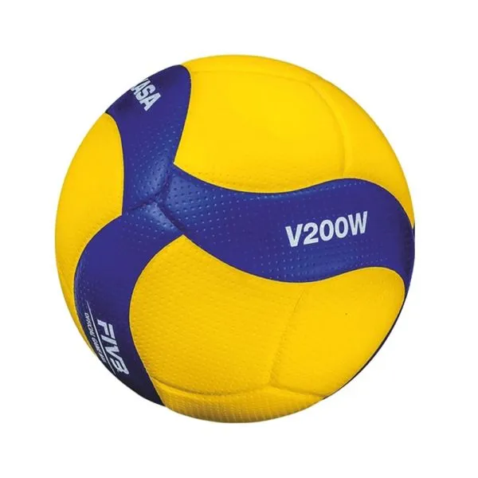
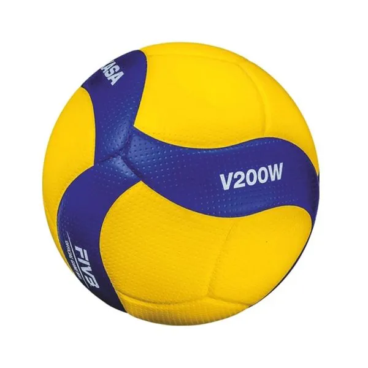

關於我
在此部落格中,將分享我在生活中的點滴。
|  |
Ivan Lin國立臺北教育大學 資訊科學系 |
我就讀於國立臺北教育大學資訊科學系，興趣是打排球和騎車。
我也熱愛聽音樂及看棒球比賽。
在此部落格中,將分享我在生活中的點滴。
|  |
Ivan Lin國立臺北教育大學 資訊科學系 |
我就讀於國立臺北教育大學資訊科學系，興趣是打排球和騎車。
我也熱愛聽音樂及看棒球比賽。
| 日期 | 學校 |
|---|---|
| 2020-2023 | 國立羅東高級中學 |
| 2023-2024 | 國立臺北教育大學 資訊科學系 |
| 跑步 | ⭐⭐⭐ |
| 排球 | ⭐⭐ |
| 桌球 | ⭐ |